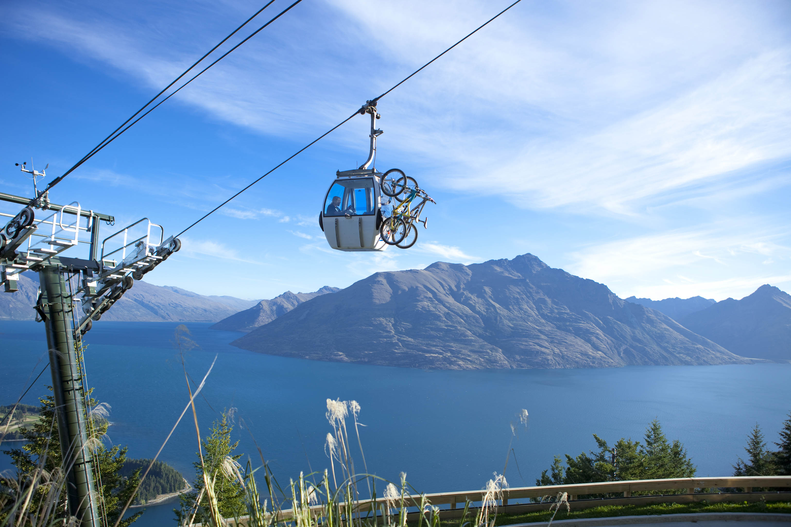

There are alot of great places to ride around the world like: Whistler in british columbia, canada. another place in Canada isThe north shore wich is basically just the whole coast of BC. Another good place would be Innursbruk in austria. some good places around here would be:
Skyline Queenstown
WHISTLER BIKE PARK